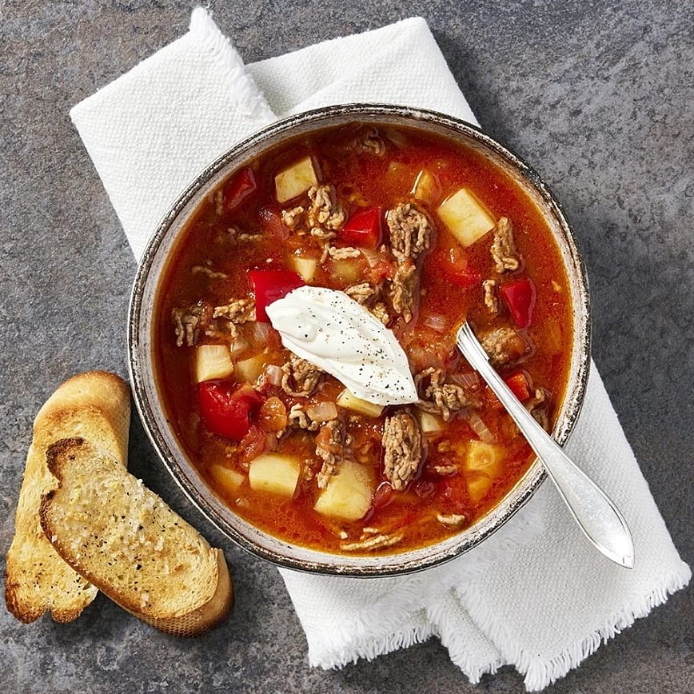

Gulashsoppa med köttfärs
4 portioner

13 Ingredienser - 30 minuter
- 1 Hackad gul lök
- 4 Skalade, hackade potatis
- 1 Tärnad paprika
- 2 msk Olja
- 500g Nötfärs
- 6 dl Vatten
- 1 Köttbuljongtärning
- 500g Krossade tomater
- 2 tk Malen kummin
- Salt
- Pepper
- Gräddfil (till servering)
- Vitlöksbröd (till servering)
- Skala lök och potatis. Dela och kärna ur paprikan. Skär i tärningar.
- Fräs grönsaker, potatis och köttfärs i oljan i en gryta eller kastrull.
- Tillsätt vatten, köttbuljongtärning, krossade tomater och kummin. Koka sakta ca 10 minuter. Smaksätt med salt och peppar.
- Servera med gräddfil och vitlöksbröd.